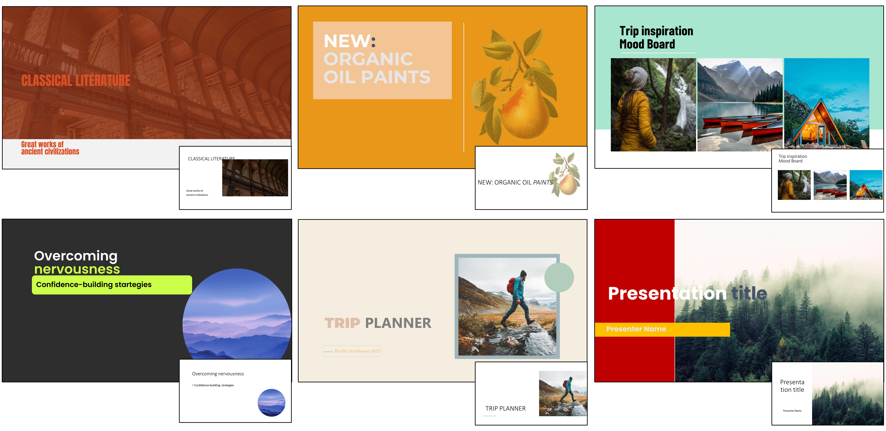
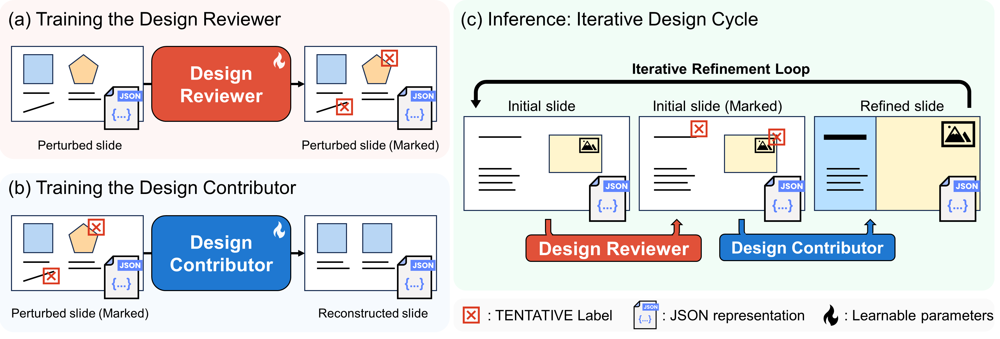
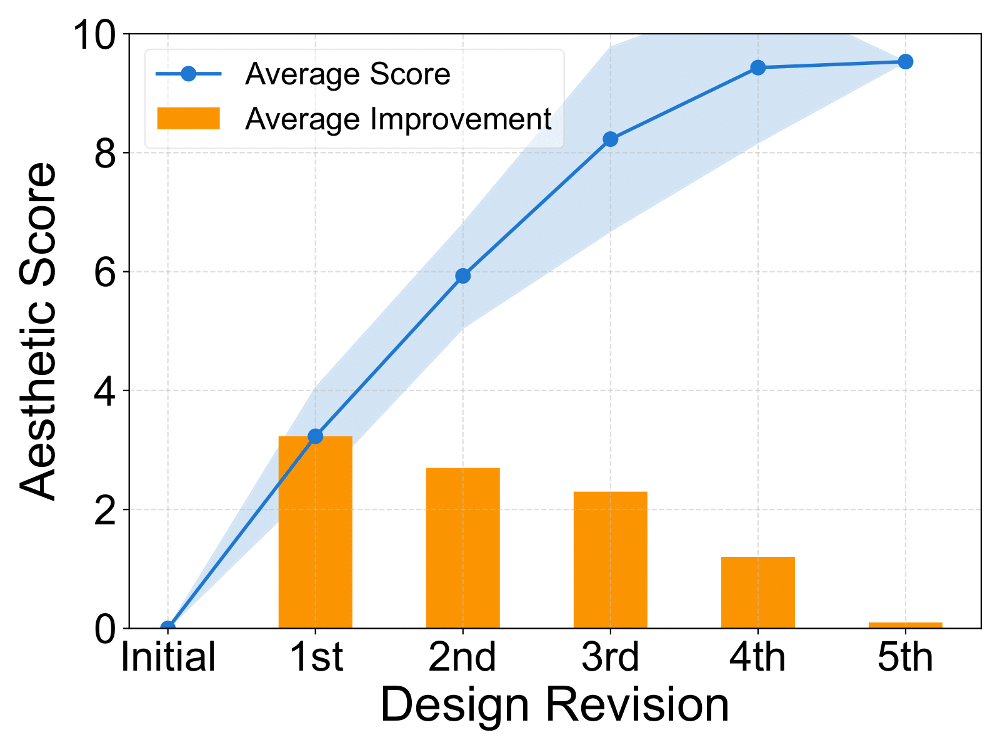
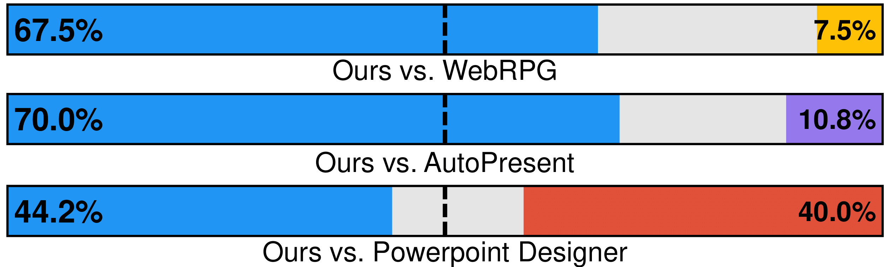

DesignLab: Designing Slides Through Iterative
Detection and Correction

Abstract
Designing high-quality presentation slides can be challenging for non-experts due to the complexity involved in navigating various design choices. Numerous automated tools can suggest layouts and color schemes, yet often lack the ability to refine their own output, which is a key aspect in real-world workflows. We propose DesignLab, which separates the design process into two roles, the design reviewer, who identifies design-related issues, and the design contributor who corrects them. This decomposition enables an iterative loop where the reviewer continuously detects issues and the contributor corrects them, allowing a draft to be further polished with each iteration, reaching qualities that were unattainable. We fine-tune large language models for these roles and simulate intermediate drafts by introducing controlled perturbations, enabling the design reviewer learn design errors and the contributor learn how to fix them. Our experiments show that DesignLab outperforms existing design-generation methods, including a commercial tool, by embracing the iterative nature of designing which can result in polished, professional slides.
For those who struggle with creating presentation slides
Creating high-quality presentation slides is not easy for everyone.
It often involves a series of nuanced decisions such as placing content or choosing color schemes and topography...


...and it can be a real headache.
Say hello to effortless presentations!
DesignLab polishes your rough ideas into presentations that actually look professional.
Watch your slides come alive with designs that drive your message home.


How does it work?
Our system how professional designers actually work - spot problems, make improvements, and repeat.
We fine-tune LLMs to act as a design reviewer (who spot problems) and a design contributor (who makes suggestions).
This iterative process continues until the design is polished to perfection.

This process is repeated until the design has no more issues.
Results
Our user study evaluates the effect of our iterative refinement on slide aesthetics.
We compare DesignLab with a commercial tool and a state-of-the-art design generation method.
The results show that DesignLab significantly improves the aesthetics of presentation slides in each iteration.


(Right) DesignLab outperforms a commercial tool and a state-of-the-art design generation method in terms of aesthetics.
Gallery


Citation
@article{yun2025designlab,
title={DesignLab: Designing Slides Through Iterative Detection and Correction},
author={Yun, Jooyeol and Wang, Heng and Shimose, Yotaro and Choo, Jaegul and Takamatsu, Shingo},
journal={arXiv preprint arXiv:2507.17202},
year={2025}
}